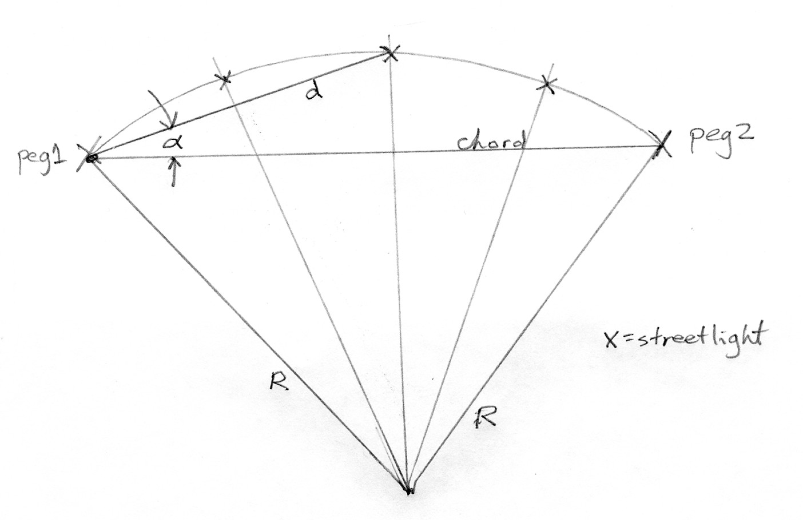

When streetlights are installed on a curve in the road, they should be equally-spaced and not more than a specified distance apart along the arc. We would like to do this efficiently with a two-person crew and not have to move the transit or theodolite.
The road, sidewalk, and curb are not yet installed. There are survey pegs at each end of the curve and no other markers.
With reference to the sketch: 
Write a C++ application that, given the radius of curvature (R), the distance between the two survey pegs (chord), and the maximum streetlight spacing (along the arc, not the straight-line distance), will display:
Assumptions:
To get you started, I have provided some useful C++ functions here.
Notice that there are ampersands (&) in the function prototype:void getUserInput (double &radius, double &pegDist, double &spacing);
This lets us call the function like this:
double radius, pDistance, space; More on this later...
getUserInput (radius, pDistance, space);
Since we don't know the number of streetlights that are required when we write the program, we want to dynamically allocate arrays of the correct size at run time.
With most compilers, you can do the following after you compute numLights:
double angles[numLight]; // Notice that I pluralize the names of arrays.
This code gets memory from the heap (as with malloc()) but hides all of the nasty-looking malloc() and free() that is actually done. (The array is returned to the heap when it goes out of scope.) However, it isn't supported by some compilers that strictly adhere to the standard. In standard C++ we can
double *angles = new double[numLight];
More on this later.
{kind=link}